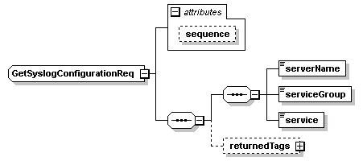
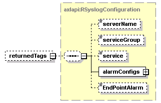

| diagram |  | ||||||||||||
| namespace | http://www.cisco.com/AXL/API/10.5 | ||||||||||||
| children | serverName serviceGroup service returnedTags | ||||||||||||
| used by |
|
||||||||||||
| attributes |
|
||||||||||||
| source | <xsd:complexType name="GetSyslogConfigurationReq"> <xsd:sequence> <xsd:sequence> <xsd:element name="serverName" type="xsd:string" nillable="false"/> <xsd:element name="serviceGroup" type="axlapi:XServiceGrouping" default="CM Services" nillable="false"/> <xsd:element name="service" type="xsd:string" nillable="false"/> </xsd:sequence> <xsd:element name="returnedTags" type="axlapi:RSyslogConfiguration" minOccurs="0"/> </xsd:sequence> <xsd:attribute name="sequence" type="xsd:unsignedLong" use="optional"/> </xsd:complexType> |
attribute GetSyslogConfigurationReq/@sequence
| type | xsd:unsignedLong | ||
| properties |
|
||
| source | <xsd:attribute name="sequence" type="xsd:unsignedLong" use="optional"/> |
element GetSyslogConfigurationReq/serverName
| diagram | |||||
| type | xsd:string | ||||
| properties |
|
||||
| source | <xsd:element name="serverName" type="xsd:string" nillable="false"/> |
element GetSyslogConfigurationReq/serviceGroup
| diagram |  |
||||||
| type | axlapi:XServiceGrouping | ||||||
| properties |
|
||||||
| source | <xsd:element name="serviceGroup" type="axlapi:XServiceGrouping" default="CM Services" nillable="false"/> |
element GetSyslogConfigurationReq/service
| diagram | |||||
| type | xsd:string | ||||
| properties |
|
||||
| source | <xsd:element name="service" type="xsd:string" nillable="false"/> |
element GetSyslogConfigurationReq/returnedTags
| diagram |  | ||||||
| type | axlapi:RSyslogConfiguration | ||||||
| properties |
|
||||||
| children | serverName serviceGroup service alarmConfigs EndPointAlarm | ||||||
| source | <xsd:element name="returnedTags" type="axlapi:RSyslogConfiguration" minOccurs="0"/> |
XML Schema documentation generated by XMLSpy Schema Editor http://www.altova.com/xmlspy